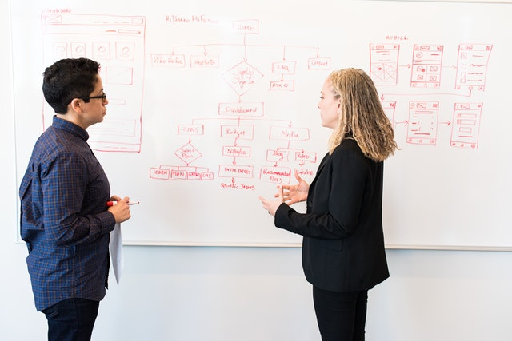

Hi, I'm Jun Yang Chin
I have recently taken a deep interest into building solutions using Data Science. This portfolio features some of my recent work to get started.
MyProjects
All of my data science projects covering various data analyses and machine learning models

Decision Tree
Predictive Maintenance
A predictive approach to manage assets thus minimising unscheduled breakdowns

Linear Regression
Social Media Ads Analytics
Predicting sales based on money spent on social media advertisments

NLP
Trip Advisor Reviews Sentiments
Identifying key performances of provided services from customer sentiments